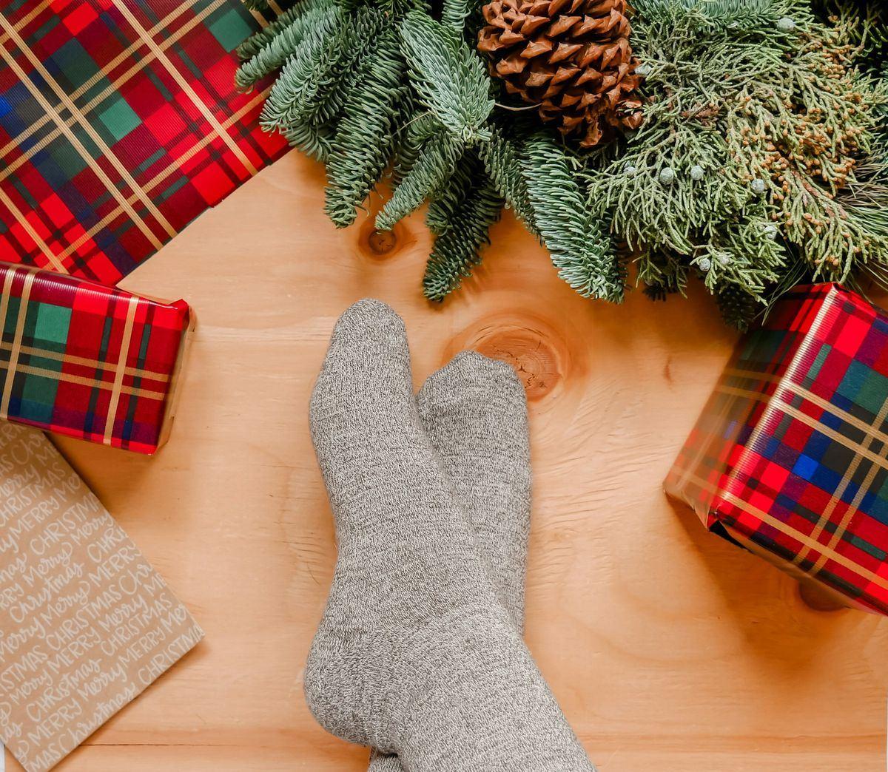

Gift guide
Night Shift Gift Basket Ideas: A Survival Kit That Gets Used

This guide contains affiliate links. If you buy through them, Holistic Life may earn a small commission at no extra cost to you. How we use affiliate links.
Quick answer
- A good night shift gift basket helps with two hard things: sleeping in the daytime and eating well when everything is closed.
- Pick one item each for sleep, a drink, a snack, a small comfort and the work bag, then add a handwritten note.
- Sleep masks, earplugs, a white noise machine, a leakproof mug and sealed snacks are safe choices.
- Skip scented lotions, anything to swallow for sleep or energy, joke gifts and anything noisy or bright.
If you are wondering what to put in a night shift gift basket, start with the two things night workers struggle with most. One is sleeping in the daytime. The other is eating well when the cafeteria is closed and the shops are dark.
These gift basket ideas are built around those two problems, plus a few small comforts. It is a survival kit that gets used, not a pile of novelty items. This is a nurse-run site, and the list suits a nurse first, but it works just as well for a partner, a grown child, a friend or a coworker who works nights. Give it at Christmas, for a birthday, or as a plain thank-you.
How to build the basket
Follow this simple formula in any store. Choose one thing for sleep, one thing to drink from, one thing to eat, one small comfort and one small thing for the work bag. Then add a note. Four or five items is plenty, and a small basket looks better than a crowded one.
Nothing on the list depends on knowing a size, except the socks. Check the size chart on the listing.
The same list works as a care package to mail. Swap the basket for a box and leave out anything that could leak.
What to put in a night shift gift basket
Each idea comes with a short note on what to look for, so you can choose well in any store. Pick a few, not all of them. The links open a current selection on Amazon.
Contoured blackout sleep mask
Night workers often sleep while the sun is up. NIOSH suggests an eye mask if room-darkening shades are not enough, and a contoured shape may feel better than a flat one.
What to look for
- A contoured shape with space over the eyes
- An adjustable strap that holds without being tight
- Washable fabric
Options that fit
- Alaska Bear contoured sleep mask, machine washable Shaped eye cups, with strap adjusters that sit away from the ears (paid link)
- Manta Original sleep mask with adjustable eye cups Machine washable, with deep eye cups you can move to fit (paid link)
See more sleep masks on Amazon (paid link)
Soft foam earplugs
Daytime is noisy, and earplugs can help cover sounds that wake a day sleeper. Soft foam is a gentle place to start.
What to look for
- Soft, low-pressure foam
- A noise reduction rating printed on the pack
- A pack with many pairs, since they wear out
Options that fit
- Mack's Ultra Soft foam earplugs, 50 pairs Low-pressure foam, a 33 decibel noise reduction rating, 50 pairs (paid link)
- Howard Leight Laser Lite foam earplugs, 50 pairs Low-pressure foam in a smaller size, with a 32 decibel rating (paid link)
See more earplugs on Amazon (paid link)
White noise machine
NIOSH lists a fan or a white noise machine as a way to cover other noises. A steady sound may help someone stay asleep through deliveries and lawn mowers.
What to look for
- A real fan or non-looping sound, so nothing repeats
- Adjustable volume
- Small enough for a nightstand
Options that fit
- LectroFan Classic sound machine Twenty non-looping sounds with volume control, about 4 inches wide (paid link)
See more white noise machines on Amazon (paid link)
Soft throw blanket
A cool bedroom can help sleep, and NIOSH suggests adding covers to stay warm. A light blanket is also something to wrap up in on the couch after a shift.
What to look for
- Machine washable
- Throw size, about 50 by 60 inches
- A lightweight fleece
Options that fit
- Bedsure fleece throw blanket, 50 x 60 inches Lightweight flannel fleece, machine washable (paid link)
- Amazon Basics fleece throw blanket, 50 x 60 inches Soft fleece without bulk, machine wash cold (paid link)
See more throw blankets on Amazon (paid link)
Compression socks
Cleveland Clinic says compression socks may help your muscles recover if you are on your feet all day for work. Nurses and many other night workers spend long hours standing.
What to look for
- Light to moderate compression sold over the counter (often labeled 15 to 20 mmHg)
- Breathable or moisture-wicking fabric
- A multi-pack for everyday wear, or a single pair as a small gift
Options that fit
- ACTINPUT compression socks, 15 to 20 mmHg, 4 pairs Breathable knee-high socks, in sizes up to 4XL (paid link)
- Nurse Mates women's compression socks, 12 to 14 mmHg, 1 pair Moisture-wicking, with a comfort top band, one size fits most (paid link)
See more compression socks on Amazon (paid link)
Leakproof travel mug
Many night workers want a hot drink at 3 a.m. or coffee for the drive home. A mug that truly seals can ride in a work bag without a mess.
What to look for
- A lid that locks, not just a sliding cover
- Fits under a single-serve coffee maker
- Keeps drinks hot for several hours
Options that fit
- Contigo West Loop 3.0 insulated travel mug, 16 oz Lid locks between sips and fits under most single-serve brewers (paid link)
See more travel mugs on Amazon (paid link)
Insulated water bottle with a leakproof lid
Breaks are short on nights, and a bottle that stays cold and survives a tumble in the bag makes it easier to keep sipping.
What to look for
- A lid that locks or screws shut, with a covered straw or spout
- A size that fits a cup holder and a locker shelf
- Parts that go in the dishwasher
Options that fit
- Owala FreeSip insulated water bottle, 24 oz Carry loop locks the lid shut, and the lid is dishwasher safe (paid link)
See more leakproof bottles on Amazon (paid link)
Single-serve snack packs
At night the cafeteria is often closed and the vending machine may be the only option. Sealed packs that need no fridge keep a real snack within reach in a locker or bag.
What to look for
- Every pack sealed on its own
- Nuts or trail mix, not only sweets
- A variety box, so there is a choice on a long night
Options that fit
- Planters nuts variety pack, 36 single-serve packs Salted cashews, salted peanuts and honey roasted peanuts (paid link)
- Kar's trail mix variety pack, 24 packs Three trail mixes, each pack wrapped on its own (paid link)
See more snack packs on Amazon (paid link)
Fragrance-free hand cream
Hands get washed many times on a shift. A cream with no scent is easier to use at work, where many teams keep fragrance low.
What to look for
- Fragrance-free, since many workplaces limit scents
- A non-greasy formula that absorbs quickly
- Pocket-size tubes, so one can stay in the work bag
Options that fit
- Eucerin Advanced Repair hand cream, fragrance-free, 3 x 2.7 oz Three travel tubes: one for work, one for home, one spare (paid link)
See more hand creams on Amazon (paid link)
Slim portable charger
Outlets are scarce on a night shift, and a phone may be the alarm that gets someone up for the next one. A small charger solves a daily annoyance.
What to look for
- Slim enough for a pocket
- Enough capacity for at least one full phone charge
- A built-in cable so there is nothing extra to carry
Options that fit
- charmast slim power bank with built-in cables, 10000mAh Slim body, and the cables stay attached (paid link)
- Anker Zolo power bank with built-in USB-C cable, 10,000mAh About 4.3 by 2.6 inches, enough for roughly two phone charges (paid link)
See more portable chargers on Amazon (paid link)
A basket they will reuse
The basket is part of the gift. One with handles can hold socks, snacks or the sleep kit on a shelf long after the rest is used up.
What to look for
- Built-in handles
- Sturdy sides that keep their shape
- A size that suits a shelf at home afterward
Options that fit
- StorageWorks water hyacinth baskets with handles, 2 count Built-in handles and a metal frame, 13 inches long (paid link)
See more storage baskets on Amazon (paid link)
A survival kit for a whole night crew
Day staff, managers and families sometimes want to leave something for a unit's night shift. Sealed single-serve snacks are the easiest choice, because nothing needs a fridge and every shift can take a share. Add a short note that says night shift was not forgotten.
Check the workplace gift rules before you drop anything off, since some places limit food or gifts. For more ideas in this style, see our thank-you basket ideas.
What to skip
- Strongly scented lotions and perfume. Many workplaces limit scents, so these often cannot be used on shift.
- Sleep aids, energy shots and anything else to swallow for sleep or energy. That is a conversation for their own clinician, and this site does not recommend supplements.
- Novelty mugs and joke gifts about being tired. They are easy to give and rarely get used.
- Anything noisy or with a bright light for the bedroom. A dark, quiet room is what most day sleepers are working toward.
If you want to give something bigger
Blackout curtains for the bedroom are a larger gift that pays off every day. NIOSH points to room-darkening shades or heavy lined drapes for people who sleep in daylight. Our sleep tips for night shift workers explain how to set up the room.
A few weeks of dinners can be just as welcome. A gift card for a ready-meal service such as Factor, or a meal kit such as Home Chef, covers the nights when cooking is not happening. If your night worker likes to cook ahead, share our meal prep ideas for 12-hour shifts.
Add a note
Write a few lines by hand and tuck them in the basket. A specific thank-you is the part people keep. Try something like "thank you for covering that holiday, it meant a lot to us." If you want more ideas for nurses, see our gifts for nurses.
Frequently asked questions
What do you put in a night shift gift basket?
Build it around sleep, food and small comforts. Choose one thing for sleep, one to drink from, one to eat, one small comfort and one thing for the work bag, then add a handwritten note. Four or five items is plenty.
What is a good gift for someone who works night shift?
Something that helps them sleep in the daytime or eat well at night. A sleep mask, earplugs or a white noise machine suits sleep, and a leakproof mug or sealed snacks make a shift easier. Nothing on the list needs a size except socks.
What should I leave out of a gift for a night shift worker?
Leave out strongly scented lotions and perfume, anything to swallow for sleep or energy, joke gifts about being tired, and anything noisy or bright for the bedroom. If they want help with sleep or energy, that is a talk for their own clinician.
Sources
Save this guide for later
Tap a pin to save it to your Pinterest boards.